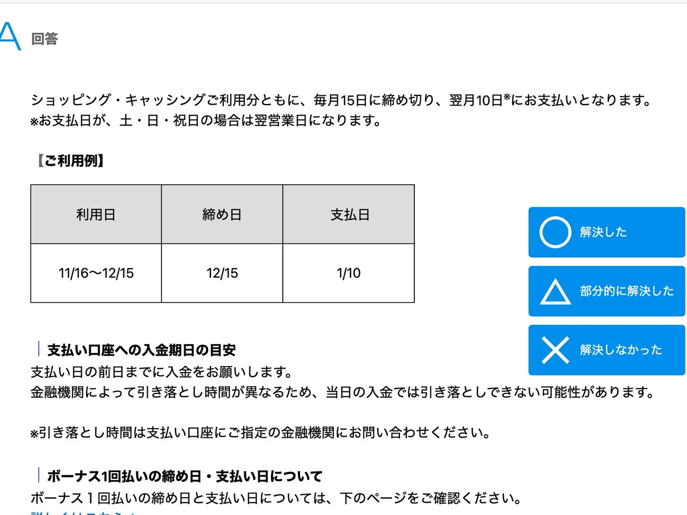
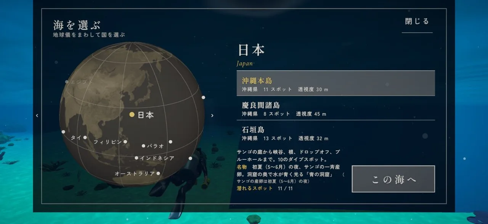
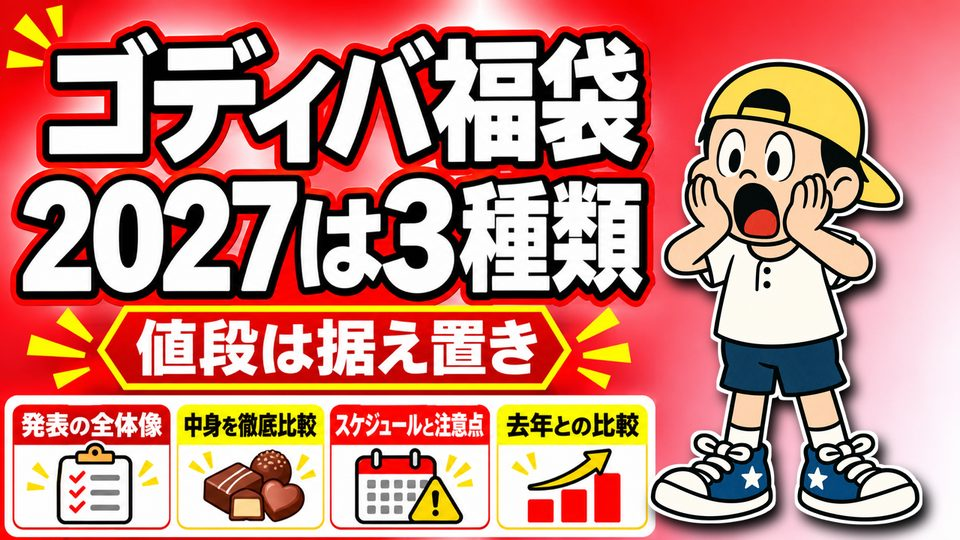

OTOKUBOY — お金の早見表と、つくっているアプリの売り場
YouTube
お金

MONEY
締切と最安が一目でわかる、お金の早見表。ふるさと納税・セール・ポイント・税と制度・スマホ料金。
YouTube
企業
解説
BUSINESS
あの会社はなぜ儲かるのか。決算と公式資料から、もうけのしくみを分解します。
YouTube
資格
解説

LICENSE
資格試験のしくみと出るところを、マルバツで覚える。まずは FP3級から。
アプリ
ダイビング

DIVING GAME
世界の海をもぐって生きものを記録する、無料のダイビングゲーム Ocean Discovery。
アプリ
お酒

SAKE NOTE
飲んだお酒を記録して図鑑を埋める、お酒図鑑。20歳以上の方向け。
アプリ
筋トレ

WORKOUT RPG
筋トレを記録すると勇者が育つ、筋トレクエスト。
アプリ
旅記録
TRAVEL NOTE
旅の計画と思い出を1冊に。Tabi Note。
NEW新着の記事
13本
 2026-11-21・スマホ・通信手数料は無料携帯電話の乗り換えMNP、やり方と手数料
2026-11-21・スマホ・通信手数料は無料携帯電話の乗り換えMNP、やり方と手数料 2026-11-21・ふるさと納税12月31日締切ふるさと納税、12月31日までにやること
2026-11-21・ふるさと納税12月31日締切ふるさと納税、12月31日までにやること
2026-11-21・ポイント・カード締め日は会社次第クレジットカードの締め日・支払い日、3社で比較2026-11-20・旅記録無料Tabi Note とは？ 行った場所を地図に塗って残すアプリの使い方2026-11-20・お酒無料・登録不要お酒図鑑とは？飲んだお酒を記録して図鑑を埋めるアプリの使い方
2026-11-20・ダイビング2つの海が無料Ocean Discovery とは？沖縄の海をもぐるダイビングゲームの遊び方2026-11-20・筋トレ無料筋トレクエストとは？ 筋トレを記録すると勇者が育つアプリの使い方 2026-11-20・企業解説営業利益の約半分が会費コストコはなぜ安いのに儲かるのか 営業利益の約半分は会費
2026-11-20・企業解説営業利益の約半分が会費コストコはなぜ安いのに儲かるのか 営業利益の約半分は会費 2026-11-20・福袋・セール1人だけ交代サンリオ福袋2027は全7キャラ4,990円で1人交代
2026-11-20・福袋・セール1人だけ交代サンリオ福袋2027は全7キャラ4,990円で1人交代
2026-11-20・福袋・セール価格は据え置きゴディバ福袋2027は3種類、価格据え置きでも中身は変化 2026-11-20・福袋・セール本番は8日間Amazonブラックフライデー2026、7つの企画の買い方
2026-11-20・福袋・セール本番は8日間Amazonブラックフライデー2026、7つの企画の買い方 2026-11-19・税・制度・NISA12月17日締切新NISAの年内枠を使い切る手順｜クレカ積立の締切後でも間に合う方法
2026-11-19・税・制度・NISA12月17日締切新NISAの年内枠を使い切る手順｜クレカ積立の締切後でも間に合う方法 2026-11-18・資格解説合格率は8割超FP3級の試験のしくみ・費用・日程まとめ 合格ラインは6割
2026-11-18・資格解説合格率は8割超FP3級の試験のしくみ・費用・日程まとめ 合格ラインは6割